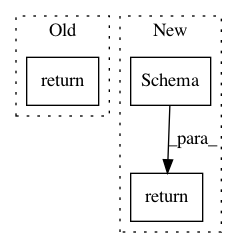

27187bfff545ef066da5627d7dff8a6caad19e9e,tensorflow_transform/beam/impl.py,TransformDataset,expand,#TransformDataset#Any#,411
Before Change
output_values = input_values | "MapInstances" >> beam.ParDo(
_RunMetaGraphDoFn(input_schema, output_schema),
transform_fn_def=beam.pvalue.AsSingleton(transform_fn))
return (output_values, output_schema)
After Change
if self._exclude_outputs is not None:
schema = output_metadata.schema
output_metadata = dataset_metadata.DatasetMetadata(
schema=dataset_schema.Schema(
{key: column_schema
for key, column_schema in schema.column_schemas.items()
if key not in self._exclude_outputs}))
output_instances = (
input_values
| "BatchInstances" >> beam.ParDo(_BatchDoFn())
| "TransformBatches" >> beam.ParDo(
_RunMetaGraphDoFn(input_metadata.schema,
output_metadata.schema,
self._exclude_outputs),
saved_model_dir=beam.pvalue.AsSingleton(transform_fn))
| "Unbatch" >> beam.FlatMap(lambda batch: batch))
return (output_instances, output_metadata)
In pattern: SUPERPATTERN
Frequency: 4
Non-data size: 3
Instances
Project Name: tensorflow/transform
Commit Name: 27187bfff545ef066da5627d7dff8a6caad19e9e
Time: 2017-02-16
Author: no-reply@google.com
File Name: tensorflow_transform/beam/impl.py
Class Name: TransformDataset
Method Name: expand
Project Name: home-assistant/home-assistant
Commit Name: c459789c09c996cb7cf2edcceb8f471867fbcf6a
Time: 2021-03-29
Author: erik@montnemery.com
File Name: homeassistant/components/cover/device_trigger.py
Class Name:
Method Name: async_get_trigger_capabilities
Project Name: tensorflow/transform
Commit Name: 12bdd147ce0585a5cc21b001474a5874acf4a9b9
Time: 2019-05-01
Author: kestert@google.com
File Name: tensorflow_transform/tf_metadata/dataset_schema.py
Class Name:
Method Name: from_feature_spec
Project Name: tensorflow/transform
Commit Name: 12bdd147ce0585a5cc21b001474a5874acf4a9b9
Time: 2019-05-01
Author: kestert@google.com
File Name: tensorflow_transform/schema_inference.py
Class Name:
Method Name: infer_feature_schema